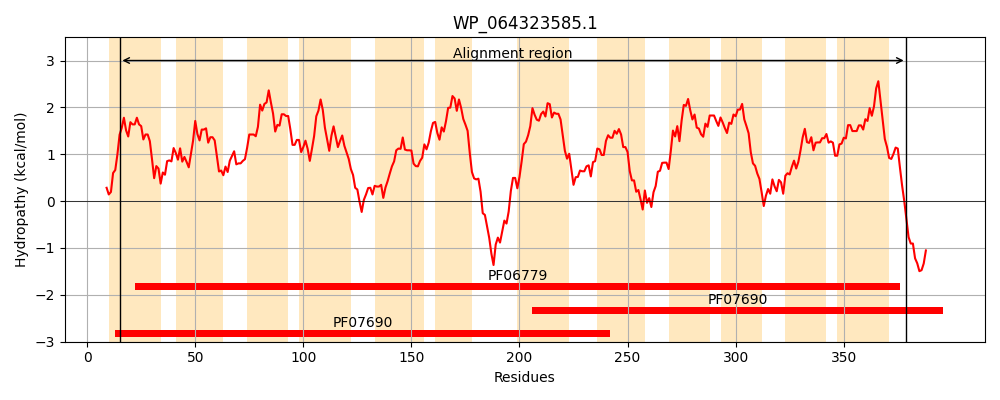
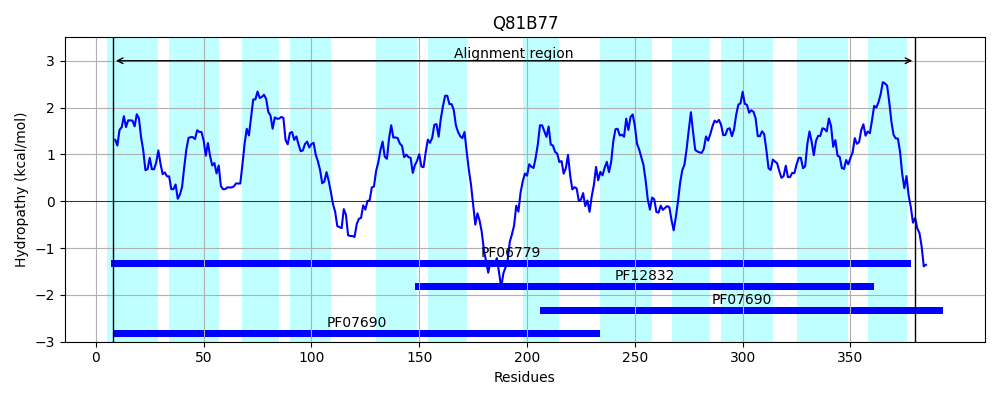
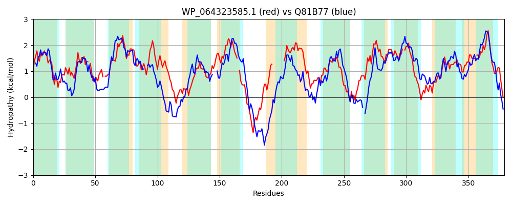

Hit Accession: Q81B77
Hit TCID: 2.A.1.26.3
Hit Description: gnl|BL_ORD_ID|15722 gnl|TC-DB|Q81B77|2.A.1.26.3 Transporter, MFS superfamily OS=Bacillus cereus (strain ATCC 14579 / DSM 31 / JCM 2152 / NBRC 15305 / NCIMB 9373 / NRRL B-3711) GN=BC_3310 PE=4 SV=1
Mach Len: 379
e:0.000000
Query TMS Count : 12
Hit TMS Count: 12
TMS-Overlap Score: 10.800000
Predicted Substrates:CHEBI:4883;ethidium bromide, CHEBI:8984;sodium dodecyl sulfate, CHEBI:32130;silver(1+) nitrate
BLAST Alignment:
Score: 200 , Bit scores: 81 bits, E-value: 5.0e-17, Alignment length: 379, Percentage identity: 23
Query: 15 MIMAASLVGFITGYTVPLISLELAQQQIAPLYVGLLAALPPAGMM-ISSFLSPALCR-RVEMGVLLSGSLILLALATIASCITTDMTLLLLPRLLTGLASGVIIVLGESWITGGAAGSQRATLTGIYASAFTGCQLAGPLLISVGPAWQASALMAIVAVTAVCLL-MLRHLPTGTRESLGERASWRSLGAFLP---------VLASGVFCFAFFDASILALLPLYGMDKGLNEGMAVLLVTVVLTGDAMFQTPLGWLADRVGIRRVHLSCAVVFSLSLLALPLMLGSRIQLMAICLLL-GAAAGALYTLSLVRAGKTFNGQKLIMINALFGFFWSAGSVAGPVVSGMLIGITGYDG-LIVTLVASGVLFLLIQCLCKNE 379
M+ ++ G G +P I++ Q+ ++ G+ A G++ IS FL + R ++ +++ G L++++L + + +L R L G+ ++ V ++WIT + S+ IY F GP L S Q + T +CL+ L LPT + +S +F + G + +A + + LP+Y + KG + L+ G + Q PLG L+D+ G R+ L+ S + L + ++ C+LL G G+ ++L L L N L G +S GS+ GPV+ G+ I Y I ++ G+L +L KN+
Sbjct: 8 MVGIVAISGLSQGMLLPAIAMIFEQEGVSSSINGIHATALYIGILVISPFLEKPMQRFGMKPIIVIGGFLVIISLFFFTQTFSFWVWFIL--RFLVGVGDHMLHVGTQTWITTTSDPSKIGRQVSIYGVFFGIGFAVGPYLASTV---QYGLATPFIISTILCLIGWLLLLPTKNAFPAQDEREVKSESSFSRYKQVVGLGWIALLGPLAYGVLEAMLNSNLPVYALRKGWSVSDVSFLLPAFAVGGIITQIPLGILSDKYGRDRI-LTWTFSISTGIFLLAAVFDQYYWIVFACMLLAGMVIGSCFSLGLGFMTDLLPRHLLPAGNILSGIAFSLGSIMGPVLGGVFIEKIQYTSFFIAVMIIMGILAMLYMVYMKNQ 380 | Protein Hydropathy Plots: |
|---|
|  |  |
Pairwise Alignment-Hydropathy Plot:
|
|---|
|  |